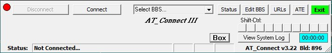
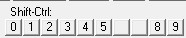
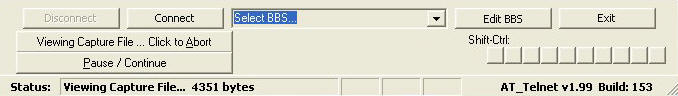
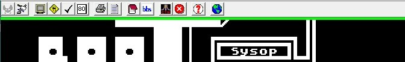

Operation - The Control Panels, Status, and Toolbar
Here is where you will learn how to operate AT_Connect. All functions of the toolbar and control panel are explained below.
The Control Panel

The Control Panel
The Control Panel
The control panel is located at the bottom of the terminal screen. It contains the BBS drop-down list box, the status bar and several buttons to control the operation of the program. Basic operation of the program is:
Select a BBS in the drop-down list.
Hit the 'Connect' button.
Wait...
The status bar will notify you when you are connected and the LED in the upper left corner shown here will turn
from Red to Green. If you enabled a 'Connect Message' in configuration, you will see it displayed in the terminal screen window.
At this point, the BBS should start prompting you...this could take as long as 5-10 seconds. If not, try hitting your <ENTER> key a few times slowly to wake up the BBS.
You may Right-click on the terminal screen at any time (even before connecting) to open the Capture sub-Menu if you want to capture the data sent from the BBS during your online session.
The 'View System Log' button will open a form that displays the System Log file. Here it can be deleted, cleared and
restarted and optionally disabled for the current session.
The Online Timer (blue box) will keep track of your time online.
Select BBS Drop-down
The Drop-down BBS Dial List Box
The drop-down list box is located in the center of the control panel. Use it to select the BBS you want to call. After selecting from the list, click the 'Connect' button to the left of the list. The list box is populated with all of the BBS names in your list.
When you have selected your BBS, you may also hit the 'Edit BBS' button to open the BBS Editor and edit the selected BBS.
The toolbar provides 1-click access to most functions. Currently, there are 15 buttons on the bar described below (left to right):
Connect - Connects you to the selected BBS. A BBS must be selected in the drop-down list box in the center of the control panel
Disconnect - disconnects you from the BBS (grayed-out here when not connected)
Clear Screen - clears the local screen (like ? CHR$(125))
BaudSim - toggles the baud rate simulator. Internet communications can be much faster than traditional modem connections, therefore data can get blasted to the screen so fast that the original effects of ATASCII graphics (like cursor controls) can get lost or unnoticed. BaudSim is a way of slowing down and smoothing the data coming onto the screen so it more closely simulates the modem connections of yesterday. There are four different baud rate speeds (Slowest,300,1200,Fastest) which can be configured on the Settings' tab of the configuration form.
Stay-Alive - The Stay-Alive function is designed to send characters to the BBS to fool the BBS inactivity timer when viewing a long text file or break movie in BaudSim mode. Typing a character at the local keyboard resets the timer.
40 / 80 column toggle - toggles the screen width between 40 and 80 columns.
NOTE: some functions Screen Dump and Screen Print do not work in 80 column mode.
Print Screen - sends the terminal screen to your printer.
NOTE: to save ink the white chars on black background are inverted.
NOTE2: Not supported in 80 column mode.
View Screen Dump Panel - loads the screen dump panel over the control panel for viewing screen dump files.
About - Tom Hunt's "Closer To Home" icon loads the About dialog box.
Windows Position Box
Exit - the big red 'X' shuts down the Winsock control and exits the program.
Help - loads this help file.
WWW - loads the web access form if the currently selected BBS has a website attached to it.
Save Window Positions - Pushing this button loads a form with a button on it which when pushed, will save all of the positions of your windows to the config file so they will always come back to the correct positions.
Macro Display

Macros
Each BBS record may contain up to 10 unique Macros. When a BBS is selected, the macros for that BBS are displayed in the control panel as shown to the right here. In the example to the right, there are eight macros (0-5 and 8-9) enabled for the current BBS. The keystroke {Shift}-{Control}-x (where x = 0 - 9) would send the associated macro. Clicking the button will also send the macro. Any buttons here that do not have a macro attached to them will be disabled and have no number in the button. Macros are initially setup in the BBS Editor.
Status Bar
The Status Bar
The status bar does three (3) things:
Shows you the status of the current connection as well as sometimes displays your last command.
Shows you the status of the operational Status Indicators (below).
Displays the current version and build number of AT_Connect.
Status Indicators
The three (3) Status Indactors indicate the following:
Status Indicators
Baud - BaudSim Enabled
Stay - Stay-alive Enabled
Cap - Capture Buffer turned ON
The View BMP Panel
View BMP panel
The View BMP panel allows you to view BMP
images in AT_Connect:
Select a BMP image file in the list box on the far right and double-click it to load it into AT_Connect for viewing ('screen.bmp' here).
Hit the 'Delete' button to delete the selected BMP file.
Hit the 'Exit' button to exit the panel.

View Capture Buttons
The View Capture Buttons
Capture Files can only be viewed in full ATASCII mode from within AT_Connect since they are not true ATASCII but rather ASCII. When viewing a capture file two additional buttons will be displayed in the control panel:
Viewing Capture File...Click to Abort - doubles as a status indicator as well as an 'abort' button. {Alt}-A does the same thing.
Pause / Continue - Pauses the viewing so your brain can catch up and Continues the viewing when it is caught up. {Alt}-P also works here.

Capture Mode enabled indicator (Green Bar)
Capture Menu
Capture Menu
There is also a new 'Capture' indicator flashing green bar across the top of the screen to remind you that you are in capture mode.
Right-clicking your mouse on the terminal screen opens the Capture Menu. From here you can do several things:
Toggle Capture mode on/off
Change the capture filename (for this capture ONLY). Use the Configuration form to change it permanently.
View the capture file in AT_Connect. NOTE: The capture file is saved in ASCII mode, so if you try to view it in Notepad or some other Windows program, it may look strange depending on how many strange ATASCII characters are in there. Viewing it in AT_Connect translates the ASCII to ATASCII to give the desired effect.
Delete the capture file.
Change the capture mode from Append to Replace. 'Append' mode means that every time the Capture buffer is turned ON and OFF, the existing capture file will be appended with newly captured data. Checking 'Replace' means that every time the 'Capture' buffer is turned ON a new capture file will replace the old one.
'Pick a file to view' allows you to do just that - view any ATASCII file.
The 'Save Screen as .BMP' item dumps the contents of the current terminal screen to a bitmap file.
NOTE: This function is not supported in 80 column mode.
The 'View System Log' item opens the log display form just like the button on the control panel.
Paste Clipboard to Main screen does exactly what it says.
Send Capture file to ATEditor for editing purposes. This can send a full or partial capture file to the editor.